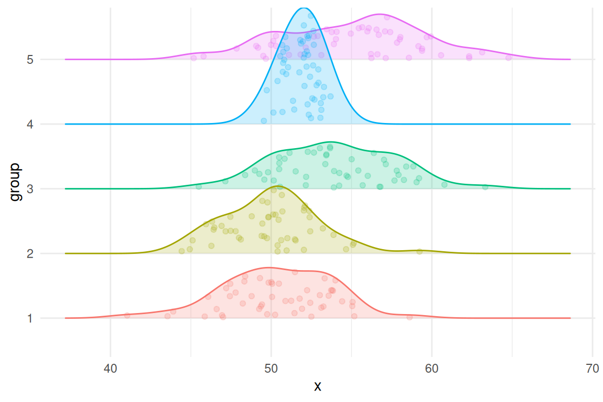
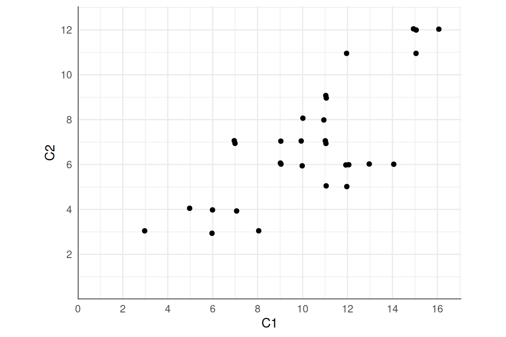
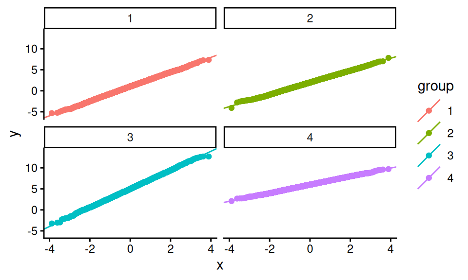
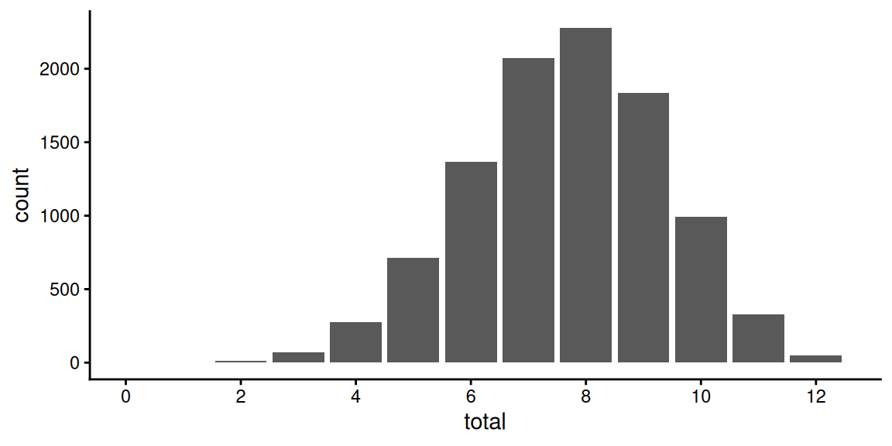

generate_data <- function(
focal_parameters, auxiliary_parameters, design_parameters
) {
# generate pseudo-random numbers and use those to make some data
return(sim_data)
}6 Data-generating processes
As we saw in Chapter 4, the first step of a simulation is creating artificial data based on some process where we know (and can control) the truth. This step is what we call the data generating process (DGP). Think of it as a recipe for cooking up artificial data, which can be applied over and over, any time we’re hungry for a new dataset. Like a good recipe, a good DGP needs to be complete—it cannot be missing ingredients and it cannot omit any steps. Unlike cooking or baking, however, DGPs are usually specified in terms of a statistical model, or a set of equations involving constants, parameter values, and random variables. More complex DGPs, such as those for hierarchical data or other latent variable models, will often involve a series of several equations that describe different dimensions or levels of the model, which need to be followed in sequence to produce an artificial dataset.
In this chapter, we will look at how to instantiate a DGP as an R function (or perhaps a set of functions). Designing DGPs and implementing them in R code involves making choices about what aspects of the model we want to be able to control and how to set up the parameters of the model. We start by providing a high-level overview of DGPs and discussing some of the choices and challenges involved in designing them. We then demonstrate how to write R functions for DGPs. In the remainder, we present detailed examples involving a hierarchical DGP for generating data on students nested within schools and an item response theory DGP for generating data on responses to individual test items.
6.1 Examples
Before diving in, it is helpful to consider a few examples that we will return to throughout this and subsequent chapters.
6.1.1 Example 1: One-way analysis of variance
We have already seen one example of a DGP in the ANOVA example from Chapter 5. Here, we consider observations on some variable \(X\) drawn from a population consisting of \(G\) groups, where group \(g\) has population mean \(\mu_g\) and population variance \(\sigma_g^2\) for \(g = 1,...,G\). A simulated dataset consists of \(n_g\) observations from each group \(g = 1,...,G\), where \(X_{ig}\) is the measurement for observation \(i\) in group \(g\). The statistical model for these data can be written as follows: \[ X_{ig} = \mu_g + \epsilon_{ig}, \quad \mbox{with} \quad \epsilon_{ig} \sim N( 0, \sigma^2_g ) \] for \(i = 1,...,n_g\) and \(g = 1,...,G\). Alternately, we could write the model as \[ X_{ig} \sim N( \mu_g, \sigma_g^2 ). \]
6.1.2 Example 2: Bivariate Poisson model
As a second example, suppose that we want to understand how the usual Pearson sample correlation coefficient behaves with non-normal data and also to investigate how the Pearson correlation relates to Spearman’s rank correlation coefficient. To look into such questions, one DGP we might entertain is a bivariate Poisson model, which is a distribution for a pair of counts, \(C_1,C_2\), where each count follows a Poisson distribution and where the pair of counts may be correlated. We will denote the expected values of the counts as \(\mu_1\) and \(\mu_2\) and the Pearson correlation between the counts as \(\rho\).
To simulate a dataset based on this model, we would first need to choose how many observations to generate. Call this sample size \(N\). One way to generate data following a bivariate Poisson model is to generate three independent Poisson random variables for each of the \(N\) observations: \[ \begin{aligned} Z_0 &\sim Pois\left( \rho \sqrt{\mu_1 \mu_2}\right) \\ Z_1 &\sim Pois\left(\mu_1 - \rho \sqrt{\mu_1 \mu_2}\right) \\ Z_2 &\sim Pois\left(\mu_2 - \rho \sqrt{\mu_1 \mu_2}\right) \end{aligned} \] and then combine the pieces to create two dependent observations: \[ \begin{aligned} C_1 &= Z_0 + Z_1 \\ C_2 &= Z_0 + Z_2. \end{aligned} \] An interesting feature of this model is that the range of possible correlations is constrained: only positive correlations are possible and, because each of the independent pieces must have a non-negative mean, the maximum possible correlation is \(\sqrt{\frac{\min\{\mu_1,\mu_2\}}{\max\{\mu_1,\mu_2\}}}\).
6.1.3 Example 3: Hierarchical linear model for a cluster-randomized trial
Cluster-randomized trials are randomized experiments where the unit of randomization is a group of individuals, rather than the individuals themselves. For example, suppose we have a collection of schools and the students within them. A cluster-randomized trial involves randomizing the schools into treatment or control conditions and then measuring an outcome such as academic performance on the multiple students within the schools. Typically, researchers will be interested in the extent to which average outcomes differ across schools assigned to different conditions, which captures the impact of the treatment relative to the control condition. We will index the schools using \(j = 1,...,J\) and let \(n_j\) denote the number of students observed in school \(j\). Say that \(Y_{ij}\) is the outcome measure for student \(i\) in school \(j\), for \(1 = 1,...,n_j\) and \(j = 1,...,J\), and let \(Z_j\) be an indicator equal to 1 if school \(j\) is assigned to the treatment condition and otherwise equal to 0.
A widely used approach for estimating impacts from cluster-randomized trials is heirarchical linear modeling (HLM). One way to write an HLM is in two parts. First, we consider a regression model that describes the distribution of the outcomes across students within school \(j\): \[ Y_{ij} = \beta_{0j} + \epsilon_{ij}, \qquad \epsilon_{ij} \sim N(0, \sigma_{\epsilon}^2), \] where \(\beta_{0j}\) is the average outcome across students in school \(j\). Second, we allow that the school-level average outcomes differ by a treatment effect \(\gamma_{1}\) and that, for schools within each condition, the average outcomes follow a normal distribution with variance \(\sigma_u^2\). We can write these relationships as a regression equation for the school-specific average outcome: \[ \beta_{0j} = \gamma_{0} + \gamma_{10} Z_j + u_{0j}, \quad u_{0j} \sim N(0, \tau^2), \] where \(\gamma_{0}\) is the average outcome among schools in the control condition.
If we only consider the first stage of this model, it looks a bit like the one-way ANOVA model from the previous example: in both cases, we have multiple observations from each of several groups.
The main distinction is that the ANOVA model treats the \(G\) groups as a fixed set, whereas the HLM treats the set of \(J\) schools as sampled from a larger population of schools and includes a regression model describing the variation in the school-level average outcomes.
6.2 Components of a DGP
A DGP involves a statistical model with parameters and random variables, but it also often includes further details as well, beyond those that we would consider to be part of the model as we would use it for analyzing real data. In statistical analysis of real data, we often use models that describe only part of the distribution of the data, rather than its full, multivariate distribution. For instance, when conducting a regression analysis, we are analyzing the distribution of an outcome or response variable, conditional on a set of predictor variables. In other words, we take the predictor variables as given or fixed, rather than modeling their distribution. When using an item response theory (IRT) model, we use responses to a set of items to estimate individual ability levels, given the set of items on the test. We do not (usually) model the items themselves. In contrast, if we are going to generate data for simulating a regression model or IRT model, we need to specify distributions for these additional features (the predictors in a regression model, the items in an IRT model); we can no longer just take them as given.
In designing and discussing DGPs, it is helpful to draw distinctions between the components of the focal statistical model and the remaining components of the DGP that are taken as given when analyzing real data. A first relevant distinction is between structural features, covariates, and outcomes (or more generally, endogenous quantities):
- Structural features are quantities, such as the per-group sample sizes in the one-way ANOVA example, that describe the structure of a dataset but do not enter directly into the focal statistical model. When analyzing real data, we usually take the structural features as they come, but when simulating data, we will need to make choices about the structural features. For instance, in the HLM example involving students nested within schools, the number of students in each school is a structural feature. To simulate data based on HLM, we will need to make choices about the number of schools and the distribution of the number of students in each school (e.g., we might specify that school sizes are uniformly distributed between specified minimum and maximum sizes), even though we do not have to consider these quantities when estimating a hierarchical model on real data.
- Covariates are variables in a dataset that we typically take as given when analyzing real data. For instance, in the one-way ANOVA example, the group assignments of each observation is a covariate. In the HLM example, covariates would include the treatment indicators \(Z_1,...,Z_J\). In a more elaborate version of the HLM, they might also include variables such as student demographic information, measures of past academic performance, or school-level characteristics such as the school’s geographic region or treatment assignment. When analyzing real data, we condition on these quantities, but when specifying a DGP, we will need to make choices about how they are distributed (e.g., we might specify that students’ past academic performance is normally distributed).
- Outcomes and endogenous quantities are the variables whose distribution is described by the focal statistical model. In the one-way ANOVA example, the outcome variable consists of the measurements \(X_{ig}\) for \(i = 1,...,n_g\) and \(g = 1,...,G\). In the bivariate Poisson model, the outcomes consist of the component variables \(Z_1,Z_2,Z_3\) and the observed counts \(C_1,C_2\) because all of these quantities follow distributions that are specified as part of the focal model. The focal statistical model specifies the distribution of these variables, and we will be interested in estimating the parameters controlling their distribution.
Note that the focal statistical model only determines this third component of the DGP. The focal model consists of the equations describing what we would aim to estimate when analyzing real data. In contrast, the full statistical model also includes additional elements specify how to generate the structural features and covariates—the pieces that are taken as given when analyzing real data. Table 6.1 contrasts the role of structural features, covariates, and outcomes in real data analysis versus in simulations.
| Component | Real world | Simulation world |
|---|---|---|
| Structural features | We obtain data of a given sample size, sizes of clusters, etc. | We specify sample sizes, we specify how to generate cluster sizes |
| Covariates | Data come with covariates | We specify how to generate covariates |
| Outcomes | Data come with outcome variables | We generate outcome data based on a focal model |
| Parameter estimation | We estimate a statistical model to learn about the unknown parameters | We estimate a statistical model and compare the results to the true parameters |
For a given DGP, the full statistical model might involve distributions for structural features, distributions for covariates, and distributions for outcomes given the covariates. Each of these distributions will involve parameters that control the properties of the distribution (such as the average and degree of variation in a variable). We think of these parameters as falling into one of three categories: focal, auxiliary, or design.
Focal parameters are the quantities that we care about and seek to estimate in real data analysis. These are typically parts of the focal statistical model, such as the population means \(\mu_1,...,\mu_G\) in the one-way ANOVA model, the correlation between counts \(\rho\) in the bivariate Poisson model, or the treatment effect \(\gamma_{1}\) in the HLM example.
Auxiliary parameters are the other quantities that go into the focal statistical model or some other part of the DGP, which we might not be substantively interested in when analyzing real data but which nonetheless affect the analysis. For instance, in the one-way ANOVA model, we would consider the population variances \(\sigma_1^2,...,\sigma_G^2\) to be auxiliary if we are not interested in investigating how they vary from group to group. In the bivariate Poisson model we might consider the average counts \(\mu_1\) and \(\mu_2\) to be auxiliary parameters.
Design parameters are the quantities that control how we generate structural features of the data. For instance, in a cluster-randomized trial, the fraction of schools assigned to treatment is a design parameter that can be directly controlled by the researchers. Additional design parameters might include the minimum and maximum number of students per school. Typically, in a real data analysis, we would not directly estimate such parameters because we take the distribution of structural features as given.
It is evident from this discussion that DGPs can involve many moving parts. One of the central challenges in specifying DGPs is that the performance of estimation methods will generally be affected by the full statistical model—including the design parameters and distribution of structural features and covariates—even though they are not part of the focal model.
6.3 A statistical model is a recipe for data generation
Once we have decided on a full statistical model and written it down in mathematical terms, we need to translate it into code. A function that implements a data-generating model should have the following form:
The function takes a set of parameter values as input, simulates random numbers and does calculations, and produces as output a set of simulated data. Typically, the inputs will consist of multiple parameters, and these will include not only the focal model parameters, but also the auxiliary parameters, sample sizes, and other design parameters. The output will typically be a dataset, mimicking what one would see in an analysis of real data. In some cases, the output data might be augmented with some other latent quantities (normally unobserved in the real world) that can be used later to assess whether an estimation procedure produces results that are close to the truth.
We have already seen an example of a complete DGP function in the case study on one-way ANOVA (see Section 5.1). In this case study, we developed the following function to generate data for a single outcome from a set of \(G\) groups:
generate_ANOVA_data <- function(mu, sigma_sq, sample_size) {
N <- sum(sample_size)
G <- length(sample_size)
group <- factor(rep(1:G, times = sample_size))
mu_long <- rep(mu, times = sample_size)
sigma_long <- rep(sqrt(sigma_sq), times = sample_size)
x <- rnorm(N, mean = mu_long, sd = sigma_long)
sim_data <- tibble(group = group, x = x)
return(sim_data)
}This function takes both the focal model parameters (mu, sigma_sq) and other design parameters that one might not think of as parameters per-se (sample_size). When simulating, we have to specify quantities that we take for granted when analyzing real data.
How would we write a DGP function for the bivariate Poisson model? The equations in Section 6.1 give us the recipe, so it just a matter of re-expressing them in code. For this model, the only design parameter is the sample size, \(N\); the sole focal parameter is the correlation between the variates, \(\rho\); and the auxiliary parameters are the expected counts \(\mu_1\) and \(\mu_2\). Our function should have all four of these quantities as inputs and should produce as output a dataset with two variables, \(C_1\) and \(C_2\). Here is one way to implement the model:
r_bivariate_Poisson <- function(N, mu1, mu2, rho = 0) {
# covariance term, equal to E(Z_3)
EZ3 <- rho * sqrt(mu1 * mu2)
# Generate independent components
Z1 <- rpois(N, lambda = mu1 - EZ3)
Z2 <- rpois(N, lambda = mu2 - EZ3)
Z3 <- rpois(N, lambda = EZ3)
# Assemble components
dat <- data.frame(
C1 = Z1 + Z3,
C2 = Z2 + Z3
)
return(dat)
}Here we generate 5 observations from the bivariate Poisson with \(\rho = 0.5\) and \(\mu_1 = \mu_2 = 4\):
r_bivariate_Poisson(5, rho = 0.5, mu1 = 4, mu2 = 4) C1 C2
1 1 0
2 5 2
3 4 4
4 5 1
5 2 36.4 Plot the artificial data
The whole purpose of writing a DGP is to produce something that can be treated just as if it were real data. Considering that is our goal, we should act like it and engage in data analysis processes that we would apply whenever we analyze real data. In particular, it is worthwhile to create one or more plots of the data generated by a DGP, just as we would if we were exploring a new real dataset for the first time. This exercise can be very helpful for catching problems in the DGP function (about which more below). Beyond just debugging, constructing graphic visualizations can be a very effective way to study a model and strengthen your understanding of how to interpret its parameters.
In the one-way ANOVA example, it would be conventional to visualize the data with box plots or some other summary statistics for the data from each group. For exploratory graphics, we prefer plots that include representations of the raw data points, not just summary statistics. The figure below uses a density ridge-plot, filled in with points for each observation in each group. The plot is based on a simulated dataset with 50 observations in each of five groups.

Here is a plot of 30 observations from the bivariate Poisson distribution with means \(\mu_1 = 10, \mu_2 = 7\) and correlation \(\rho = .65\) (points are jittered slightly to avoid over-plotting):

Plots like these are useful for building intuitions about a model. For instance, we can inspect Figure 6.1 to get a sense of the order of magnitude and range of the observations, as well as the likelihood of obtaining multiple observations with identical counts. Depending on the analysis procedures we will apply to the dataset, we might even create plots of transformations of the dataset, such as a histogram of the differences \(C_2 - C_1\) or a scatterplot of the rank transformations of \(C_1\) and \(C_2\).
6.5 Check the data-generating function
An important part of programming in R—especially when writing custom functions—is finding ways to test and check the correctness of your code. Just writing a data-generating function is not enough. It is also critical to test whether the output it produces is correct. How best to do this will depend on the particulars of the DGP being implemented.
For many DGPs, a broadly useful strategy is to generate a very large sample of data—one so large that the sample distribution should very closely resemble the population distribution. One can then test whether features of the sample distribution closely align with corresponding parameters of the population model.
For the heteroskedastic ANOVA problem, one basic thing we can do is check that the simulated data from each group follows a normal distribution. In the following code, we simulate very large samples from each of the four groups, and check that the means and variances agree with the input parameters:
mu <- c(1, 2, 5, 6)
sigma_sq <- c(3, 2, 5, 1)
check_data <- generate_ANOVA_data(
mu = mu,
sigma_sq = sigma_sq,
sample_size = rep(10000, 4)
)
chk <-
check_data %>%
group_by( group ) %>%
dplyr::summarise(
n = n(),
mean = mean(x),
var = var(x)
) %>%
mutate(mu = mu, sigma2 = sigma_sq) %>%
relocate( group, n, mean, mu, var, sigma2 )
chk# A tibble: 4 × 6
group n mean mu var sigma2
<fct> <int> <dbl> <dbl> <dbl> <dbl>
1 1 10000 1.01 1 2.99 3
2 2 10000 1.98 2 2.04 2
3 3 10000 5.00 5 4.91 5
4 4 10000 5.99 6 0.996 1It seems we are recovering our parameters.
We can also make some diagnostic plots to assess whether we have normal data (using QQ plots, where we expect a straight line if the data are normal):
ggplot( check_data ) +
aes( sample = x, color = group ) +
facet_wrap( ~ group ) +
stat_qq() + stat_qq_line()
This diagnostic looks good too. Here, these checks may seem a bit silly, but most bugs are silly—at least once you find them! In models that are even a little bit more complex, it is quite easy for small things such as a sign error to slip into your code. Even simple checks such as these can be quite helpful in catching such bugs.
6.6 Example: Simulating clustered data
Writing code for a complicated DGP can feel like a daunting task, but if you first focus on a recipe for how the data is generated, it is often not too bad to then convert that recipe into code. We now illustrate this process with a detailed case study involving a more complex data-generating process Recent literature on multisite trials (where, for example, students are randomized to treatment or control within each of a series of schools) has explored how variation in the strength of effects across schools can affect how different data-analysis procedures behave (e.g., Miratrix et al. 2021; Bloom et al. 2016). In this example, we are going to extend this work to explore best practices for estimating treatment effects in cluster randomized trials. In particular, we will investigate what happens when the treatment impact for each school is related to the size of the school.
6.6.1 A design decision: What do we want to manipulate?
In designing a simulation study, we need to find a DGP that will allow us to address the specific questions we are interested in investigating. For instance, in the one-way ANOVA example, we wanted to see how different degrees of within-group variation impacted the performance of several hypothesis-testing procedures. We therefore needed a data generation process that allowed us to control the extent of within-group variation.
To figure out what DGP to use for simulating data from a cluster-randomized trial, we need to consider how we are going to use those data in our simulation study. Because we are interested in understanding what happens when school-specific effects are related to school size, we will need data with the following features:
- observations for students in each of several schools;
- schools are different sizes and have different mean outcomes;
- school-specific treatment effects correlate with school size; and
- schools are assigned to different treatment conditions.
A given dataset will consist of observations for individual students in schools, with each student having a school id, a treatment assignment (shared for all in the school), and an outcome. A good starting point for building a DGP is to first sketch out what a simulated dataset should look like. For this example, we need data like the following:
| schoolID | Z | size | studentID | Y |
|---|---|---|---|---|
| 1 | 1 | 24 | 1 | 3.6 |
| 1 | 1 | 24 | 3 | 1.0 |
| 1 | etc | etc | etc | etc |
| 1 | 1 | 24 | 24 | 2.0 |
| 2 | 0 | 32 | 1 | 0.5 |
| 2 | 0 | 32 | 2 | 1.5 |
| 2 | 0 | 32 | 3 | 1.2 |
| etc | etc | etc | etc | etc |
When running simulations, it is good practice to look at simple scenarios along with complex ones. This lets us not only identify conditions where some aspect of the DGP is important, but also verify that the feature does not matter under scenarios where we know it should not. Given this principle, we land on the following points:
- We need a DGP that lets us generate schools that are all the same size or that are all different sizes.
- Our DGP should allow for variation in the school-specific treatment effects.
- We should have the option to generate school-specific effects that are related or unrelated to school size.
6.6.2 A model for a cluster RCT
DGPs are expressed and communicated using mathematical models. In developing a DGP, we often start by considering the model for the outcomes (along with its focal parameters), which covers some but not all of the steps in the full recipe for generating data. It is helpful to write down the equations for the outcome model and then note what further quantities need to be generated (such as structural features and covariates). Then we can consider how to generate these quantities with auxiliary models.
Section 6.1.3 introduced a basic multilevel model for a cluster-randomized trial. This model had two parts, starting with a model for our student outcome: \[ Y_{ij} = \beta_{0j} + \epsilon_{ij} \mbox{ with } \epsilon_{ij} \sim N( 0, \sigma^2_\epsilon ) \] where \(Y_{ij}\) is the outcome for student \(i\) in school \(j\), \(\beta_{0j}\) is the average outcome in school \(j\), and \(\epsilon_{ij}\) is the residual error for student \(i\) in school \(j\). The model was completed by specifying how the school-level outcomes vary as a function of treatment assignment: \[ \beta_{0j} = \gamma_{0} + \gamma_{1} Z_j + u_j, \quad u_j \sim N( 0, \sigma^2_u ).\] This model has a constant treatment effect: if a school is assigned to treatment, then the outcomes of all students in the school are raised by \(\gamma_{1}\). But we also want to allow the size of impact to vary by school size. This suggests we will need to elaborate the model to include a treatment-by-size interaction term.
One approach for allowing the school-specific impacts to depend on school size is to introduce school size as a predictor, as in \[ \beta_{0j} = \gamma_{0} + \gamma_{1} Z_j + \gamma_{2} \left(Z_j \times n_j\right) + u_j. \] A drawback of this approach is that changing the average size of the schools will change the average treatment impact. A more interpretable approach is to allow treatment effects to depend on the relative school sizes. To do this, we can define a covariate that describes the deviation in the school size relative to the average size. Thus, let \[ S_j = \frac{n_j - \bar{n}}{ \bar{n} }, \] where \(\bar{n}\) is the overall average school size. Using this covariate, we then revise our equation for our school \(j\) to: \[ \beta_{0j} = \gamma_{0} + \gamma_{1} Z_j + \gamma_{2} \left( Z_j \times S_j\right) + u_j. \] If \(\gamma_{2}\) is positive, then bigger schools will have larger treatment impacts. Because \(S_j\) is centered at 0, the overall average impact across schools will be simply \(\gamma_{1}\). (If \(S_j\) was not centered at zero, then the overall average impact would be some function of \(\gamma_{1}\) and \(\gamma_{2}\).)
Putting all of the above together, we now have an HLM to describe the distribution of outcomes conditional on the covariates and structural features: \[ \begin{aligned} Y_{ij} &= \beta_{0j} + \epsilon_{ij} \quad &\epsilon_{ij} &\sim N( 0, \sigma^2_\epsilon ) \\ \beta_{0j} &= \gamma_{0} + \gamma_{1} Z_j + \gamma_{2} Z_j S_j + u_j \quad & u_j &\sim N( 0, \sigma^2_u ) \end{aligned} \] Substituting the second equation into the first leads to a single equation for generating the student-level outcomes (or what is called the reduced form of the HLM): \[ Y_{ij} = \gamma_{0} + \gamma_{1} Z_j + \gamma_{2} Z_j S_j + u_j + \epsilon_{ij}\] The parameters of this focal model are the mean outcome among control schools (\(\gamma_{0}\)), the average treatment impact (\(\gamma_{1}\)), the school-size by treatment interaction term (\(\gamma_{2}\)), the amount of school-level variation (\(\sigma^2_u\)), and the amount of within-school variation (\(\sigma^2_\epsilon\)).
There are several ways that we could elaborate this model further. For one, we might want to include a main effect for \(S_j\), so that average outcomes in the absence of treatment are also dependent on school size. For another, we might revise the model to allow for school-to-school variation in treatment impacts that is not explained by school size. For simplicity, we do not build in these further features, but see the exercises at the end of the chapter.
So far we have a mathematical model analogous to what we would write if we were analyzing the data. To generate data, we also need a way to generate the structural features and covariates involved in the model. First, we need to know the number of clusters (\(J\)) and the sizes of the clusters (\(n_j\), for \(j = 1, ..., J\)). For illustrative purposes, we will generate size sizes from a uniform distribution with average school size \(\bar{n}\) and a fixed parameter \(\alpha\) that controls the degree of variation in school size. Mathematically, \[ n_j \sim \text{Unif}\left[ (1-\alpha)\bar{n}, (1+\alpha)\bar{n} \right].\] Equivalently, we could generate school sizes by taking \[n_j = \bar{n}(1 + \alpha U_j), \quad U_j \sim unif(-1, 1).\] For instance, if \(\bar{n} = 100\) and \(\alpha = 0.25\) then schools would range in size from 75 to 125. This specification is nice because it is simple, with just two parameters, both of which are easy to interpret: \(\bar{n}\) is the average school size and \(\alpha\) is the degree of variation in school size.
To round out the model, we also need to define how to generate the treatment indicator, \(Z_j\). To allow for different treatment allocations, we will specify a proportion \(p\) of clusters assigned to treatment. Because we are simulating a cluster-randomized trial, we do this by drawing a simple random sample (without replacement) of \(p \times J\) schools out of the total sample of \(J\) schools, then setting \(Z_j = 1\) for these schools and \(Z_j = 0\) for the remaining schools. We will denote this process as \(Z_1,...,Z_J \sim SRS(p, J)\), where SRS stands for simple random sample.
Now that we have an auxiliary model for school sizes, let us look again at our treatment impact heterogeneity term: \[ \gamma_{2} Z_j S_j = \gamma_{2} Z_j \left(\frac{n_j - \bar{n}}{\bar{n}}\right) = \gamma_{2} \alpha Z_j U_j, \] where \(U_j \sim \text{Unif}(-1,1)\) is the uniform variable used to generate \(n_j\). Because we have standardized by average school size, the importance of the covariate does not change as a function of average school size, but rather as a function of the relative variation parameter \(\alpha\). Setting up a DGP with standardized quantities will make it easier to interpret simulation results, especially if we are looking at results from multiple scenarios with different parameter values. To the extent feasible, we want the parameters of the DGP to change only one feature of the data, so that it is easier to isolate the influence of each parameter.
6.6.3 From equations to code
When sketching out the equations for the DGP, we worked from the lowest level of the model (the students) to the higher level (schools) and then to the auxiliary models for covariates and structural features. For writing code to based on the DGP, we will proceed in the opposite direction, from auxiliary to focal and from the highest level to the lowest. First, we will generate the schools and their features:
- Generate school sizes
- Generate school-level covariates
- Generate school-level random effects
Then we will generate the students inside the schools:
- Generate student residuals
- Add everything up to generate student outcomes
The mathematical model gives us the details we need to execute with each of these steps.
Here is the skeleton of a DGP function with arguments for each of the parameters we might want to control, including defaults for each (see Section A.2 for more on function defaults):
gen_cluster_RCT <- function(
J = 30,
n_bar = 10,
alpha = 0,
p = 0.5,
gamma_0 = 0, gamma_1 = 0, gamma_2 = 0,
sigma2_u = 0, sigma2_e = 1
) {
# generate schools sizes
# Code (see below) goes here
}Note that the inputs to this function are a mix of model parameters (gamma_0, gamma_1, gamma_2, representing coefficients in regressions), auxilary parameters (sigma2_u, sigma2_e, alpha, n_bar), and design parameters (J, p) that directly inform data generation. We set default arguments (e.g., gamma_0=0) so that we can ignore aspects of the DGP that we do not care about for the moment.
Inside the model, we will have a block of code to generate the variables pertaining to schools, and then another to generate the variables pertaining to students.
We first make the schools:
n_min <- round( n_bar * (1 - alpha) )
n_max <- round( n_bar * (1 + alpha) )
nj <- sample( n_min:n_max, J, replace = TRUE )
# Generate average control outcome for all schools
# (the random effects)
u0j <- rnorm( J, mean = 0, sd = sqrt(sigma2_u) )
# randomize schools (proportion p to treatment)
Zj <- ifelse( sample( 1:J ) <= J * p, 1, 0)
# Calculate schools intercepts
S_j <- (nj - n_bar) / n_bar
beta_0j <- gamma_0 + gamma_1 * Zj + gamma_2 * Zj * S_j + u0jThe code is a literal translation of the math we did before. Note the line with sample(1:J) <= J*p; this is a simple trick to generate a 0/1 indicator for control and treatment conditions.
There is also a serious error in the above code (serious in that the code will run and look fine in many cases, but not always do what we want); we leave it as an exercise (see below) to find and fix it.
Next, we use the school characteristics to generate the individual-level variables:
# Make individual site membership
sid <- as.factor( rep( 1:J, nj ) )
# Generate the individual-level errors and outcome
N <- sum( nj )
e <- rnorm( N, mean = 0, sd = sqrt(sigma2_e) )
Y <- beta_0j[sid] + e
# Bundle into a dataset
dd <- data.frame(
sid = sid,
Z = Zj[ sid ],
Yobs = Y
)A key piece here is the rep() function that takes a list and repeats each element of the list a specified number of times. In particular, rep() repeats each number (\(1, 2, \ldots, J\)), the corresponding number of times as listed in nj. Putting the code above into the function skeleton will produce a complete DGP function (view the complete function here). We can then call the function as so:
dat <- gen_cluster_RCT(
J=3, n_bar = 5, alpha = 0.5, p = 0.5,
gamma_0 = 0, gamma_1 = 0.2, gamma_2 = 0.2,
sigma2_u = 0.4, sigma2_e = 1
)
head( dat ) sid Z Yobs
1 1 1 -0.18235214
2 1 1 -0.50136685
3 1 1 1.10960242
4 2 0 0.07182754
5 2 0 0.83878390
6 3 0 1.06898694With this function, we can control the average size of the clusters (n), the number of clusters (J), the proportion treated (p), the average outcome in the control group (gamma_0), the average treatment effect (gamma_1), the school size by treatment interaction (gamma_2), the amount of cross site variation (sigma2_u), the residual variation (sigma2_e), and the amount of school size variation (alpha). The next step is to test the code, making sure it is doing what we think it is. In fact, it is not–there is a subtle bug that only appears under some specifications of the parameters; see the exercises for more on diagnosing and repairing this error.
6.6.4 Standardization in the DGP
One difficulty with the current implementation of the model is that the magnitude of the different parameters are inter-connected. For instance, raising or lowering the within-school variance (\(\sigma^2_u\)) will increase the overall variation in \(Y\), and therefore affect our the interpretation of the treatment effect parameters, because a given value of \(\gamma_{1}\) will be less consequential if there is more overall variation. We can fix this issue by standardizing the model parameters. Standardization will allow us to reduce the set of parameters we might want to manipulate and will ensure that varying the remaining parameters only affects one aspect of the DGP.
For a continuous, normally distributed outcome variable, a common approach to scaling is to constrain the overall variance of the outcome to a fixed value, such as 1 or 100. The magnitude of the other parameters of the model can then be interpreted relative to this scale. Often, we can also constrain the mean of the outcome to a fixed value, such as setting \(\gamma_0 = 0\) without affecting the interpretation of the other parameters.
With the current model, the variance of the outcome across students in the control condition is \[ \begin{aligned} \text{Var}( Y_{ij} | Z_j = 0) &= \text{Var}( \beta_{0j} + \epsilon_{ij} | Z_j = 0) \\ &= \text{Var}( \gamma_{0} + \gamma_{1} Z_j + \gamma_{2} Z_j S_j + u_j + \epsilon_{ij} | Z_j = 0) \\ &= \text{Var}( \gamma_{0} + u_j + \epsilon_{ij} ) \\ &= \sigma^2_u + \sigma^2_\epsilon. \end{aligned} \] To ensure that the total variance is held constant, we can redefine the variance parameters in terms of the intra-class correlation (ICC). The ICC is defined as \[ ICC = \frac{ \sigma^2_u }{ \sigma^2_u + \sigma^2_\epsilon }.\] The ICC measures the degree of between-group variation as a proportion of the total variation of the outcome. It plays an important role in power calculations for cluster-randomized trials. If we want the total variance of the outcome to be 1, we need to set \(\sigma^2_u + \sigma^2_{\epsilon} = 1\), which the implies that \(ICC = \sigma^2_u\), and \(\sigma^2_\epsilon = 1 - ICC\). Thus, we can call our DGP function as follows:
ICC <- 0.3
dat <- gen_cluster_RCT(
J = 30, n_bar = 20, alpha = 0.5, p = 0.5,
gamma_0 = 0, gamma_1 = 0.3, gamma_2 = 0.2,
sigma2_u = ICC, sigma2_e = 1 - ICC
)Manipulating the ICC rather than separately manipulating \(\sigma^2_u\) and \(\sigma^2_\epsilon\) will let us change the degree of between-group variation without affecting the overall scale of the outcome.
A further consequence of setting the overall scale of the outcome to 1 is that the parameters controlling the treatment impact can now be interpreted as standardized mean difference effect sizes. The standardized mean difference for a treatment impact is defined as the average impact over the standard deviation of the outcome among control observations.1 Letting \(\delta\) denote the standardized mean difference parameter, \[ \delta = \frac{E(Y | Z_j = 1) - E(Y | Z_j = 0)}{SD( Y | Z_j = 0 )} = \frac{\gamma_1}{\sqrt{ \sigma^2_u + \sigma^2_\epsilon } } \] Because we have constrained the total variance to 1, \(\gamma_1\) is equivalent to \(\delta\). This equivalence holds for any value of \(\gamma_0\), so we do not have to worry about manipulating \(\gamma_0\) in the simulations—we can simply leave it at its default value. The \(\gamma_2\) parameter only influences outcomes for those in the treatment condition, with larger values inducing more variation. Standardizing based on the total variance also makes \(\gamma_2\) somewhat easier to interpret because this parameter the same units as \(\gamma_1\). Specifically, \(\gamma_2\) is the expected difference in the standardized treatment impact for schools that differ in size by \(\bar{n}\) (the overall average school size). More broadly, standardizing by a stable parameter (the variation among those in the control condition) rather than something that changes in reaction to other parameters (which would be the case if we standardized by overall variation or pooled variation) will lead to more interpretable quantities.
6.7 Sometimes a DGP is all you need
We have introduced the data-generating process as only the first step in developing a simulation study. Indeed, there are many more considerations to come, which we will describe in subsequent chapters. However, this first step is still very useful in its own right, even apart from the other components of a simulation. Sometimes, a data-generating function is all you need to learn about a statistical model.
A data-generating function provides a very effective way to study a statistical model, such as a model that you might be learning about in a course or through self-study. Writing code based on a model is a much more active process than listening to a lecture or reading a book or paper. Coding requires you to make the mathematical notation tangible and can help you to notice details of the model that might be easily missed through listening or reading alone.
Suppose we are taking a first course psychometrics and have just been introduced to item response theory (IRT) models for binary response items. Our instructor has just laid out a bunch of notation:
- We have data from a sample of \(N\) individuals, each of whom responds to a set of \(M\) test items.
- We let \(X_{im} = 1\) if respondent \(i\) answers item \(m\) correctly, with \(X_{im} = 0\) otherwise, for \(i = 1,...,N\) and \(m = 1,...,M\).
- We imagine that each respondent has a latent ability \(\theta_i\) on whatever domain the test measures.
Our instructor next puts up a slide showing the equation for what they say is a three-parameter IRT model: \[ Pr(X_{im} = 1) = \gamma_m + (1 - \gamma_m) g\left( \alpha_m [\theta_i - \beta_m]\right), \] where \(g(x)\) is the cumulative logistic curve: \(g(x) = e^x / (1 + e^x)\). The instructor explains that \(\alpha_m\) is a positive-valued “discrimination parameter”, \(\beta_m\) is a difficulty parameter that can be any value, and \(\gamma_m\) is a guessing probability parameter between 0 and 1. They further explain that the guessing parameter is often hard to estimate and so might get treated as fixed and known, based on the number of response options on the item. For instance, if all the items have four options, then we might take \(\gamma_m = \frac{1}{4}\) for \(m = 1,...,M\). Finally, they explain that the ability parameters are assumed to follow a standard normal distribution, so \(\theta_i \sim N(0, 1)\) in the population.
What is this madness? It certainly is a lot of notation to follow. To make sense of all the moving pieces, let’s try simulating from the model using more-or-less arbitrary parameters. To begin, we will need to pick a test length \(M\) and a sample size \(N\). Let’s use \(N = 7\) participants and \(M = 4\) items for starters:
N <- 7
M <- 4DGPs usually follow a hierarchy, with different elements being defined in terms of other elements, and so on until some elements do not depend on anything. Following this structure, we first generate the ability parameters because they follow a standard normal distribution that does not depend on anything else:
thetas <- rnorm(N)Now we need sets of parameters \(\alpha_m, \beta_m, \gamma_m\) for every item \(m = 1,...,M\). Where do we get these?
For a particular fixed-length test, the set of item parameters would depend on the features of the actual test questions. But we are not (yet) dealing with actual testing data, so we will need to make up an auxiliary model for these parameters. Perhaps we could just simulate some values? Each item requires three numbers; the easiest way to generate them is to let them all be independent of each other, so we do that.
Difficulty: Arbitrarily, let’s draw the difficulty parameters from a normal distribution with mean \(\mu_\beta = 0\) and standard deviation \(\tau_\beta = 1\).
Discrimination: The discrimination parameters have to be greater than zero, and values near \(\alpha_m = 1\) make the model simplify (in other words, if \(\alpha_1 = 1\) then we can drop the parameter from the model), so let’s draw them from a gamma distribution with mean \(\mu_\alpha = 1\) and standard deviation \(\tau_\alpha = 0.2\). In looking up
rgamma()we see that it takes shape and rate, so we need to convert our mean and standard deviation before we can generate values. A bit of poking on Wikipedia gives us our transform: shape is equal to \(\mu_\alpha^2 \tau_\alpha^2 = 0.2^2\) and rate is equal to \(\mu_\alpha \tau_\alpha^2 = 0.2^2\).Guessing: Finally, we imagine that all the test questions have four possible responses, and therefore set \(\gamma_m = \frac{1}{4}\) for all the items, just like the instructor suggested.
Here is the code following from this line of reasoning:
betas <- rnorm(M, mean = 0, sd = 1.5) # difficulty
alphas <- rgamma(M, shape = 0.2^2, rate = 0.2^2) # discrimination
gammas <- rep(1 / 4, M) # guessingA three-parameter IRT model describes the probability that a given respondent with ability \(\theta_i\) answers item \(m\) correctly. To generate data based on the model, we need to produce scores on every item for every respondent, leading to a matrix of \(N\) respondents by \(M\) items. To simplify this calculation, we write a function to compute the item probabilities for a single respondent:
r_scores <- function(theta_i, alphas, betas, gammas, M) {
pi_i <- gammas + (1 - gammas) * plogis(alphas * (theta_i - betas))
scores <- rbinom(M, size = 1, prob = pi_i)
names(scores) <- paste0("q",1:M)
return(scores)
}
r_scores( thetas[1],
alphas = alphas, betas = betas,
gammas = gammas, M = M )q1 q2 q3 q4
0 1 0 1 The first line of the function calculates the probability of correctly answering all \(M\) items, and stores the result in a vector pi_i. This code is simply the math turned into R syntax, nothing more, nothing less. In the next line, we simulate binary outcomes by flipping coins with the specified vector of probabilities. Finally, we assign names to each item so that we can keep track of which score is for which item. Now, we use map() to run the function on each respondent:
map_dfr(
thetas, .f = r_scores,
alphas = alphas, betas = betas, gammas = gammas, M = M
)# A tibble: 7 × 4
q1 q2 q3 q4
<int> <int> <int> <int>
1 1 0 1 1
2 1 0 1 1
3 0 0 0 1
4 0 0 0 1
5 1 1 0 0
6 0 0 0 1
7 1 0 1 1To make it easier to generate datasets with different characteristics, we bundle the above code chunks into a single data-generating function. To do so, we have to decide what the input parameters should be. We know we need to at least specify \(N\) and \(M\). We made assumptions about the item parameters, but we had to specify means and standard deviations for the difficulty and discrimination parameter distributions, so it is natural to allow those to be inputs also. Our data-generating function will then be
r_3PL_IRT <- function(
N, M = 4,
diff_M = 0, diff_SD = 1,
disc_M = 1, disc_SD = 0.2,
item_options = 4
) {
# generate ability parameters
thetas <- rnorm(N)
# generate item parameters
alphas <- rgamma(
M,
shape = disc_M^2 * disc_SD^2,
rate = disc_M * disc_SD^2
)
betas <- rnorm(M, mean = diff_M, sd = diff_SD)
gammas <- rep(1 / item_options, M)
# simulate item responses
test_scores <- map_dfr(
thetas, .f = r_scores,
alphas = alphas, betas = betas, gammas = gammas, M = M
)
# calculate total score
test_scores$total <- rowSums(test_scores)
return(test_scores)
}
r_3PL_IRT(N = 7, M = 4)# A tibble: 7 × 5
q1 q2 q3 q4 total
<int> <int> <int> <int> <dbl>
1 0 0 0 0 0
2 0 1 0 1 2
3 1 1 1 1 4
4 0 1 1 1 3
5 1 0 1 1 3
6 0 0 1 1 2
7 0 0 0 1 1We have a DGP function! We next use it to understand our model. To get a sense of variation across items and participants, we generate a dataset with many, many participants taking a longer test with \(M = 12\) items:
test_scores <- r_3PL_IRT(N = 10000, M = 12)Having written a function for the 3-parameter logistic IRT model makes it easy to explore properties of the model. For instance, we can easily visualize the distribution of the total scores on the test:
ggplot(test_scores, aes(total)) +
geom_bar() +
scale_x_continuous(limits = c(0,12.5), breaks = seq(0,12,2))
Looking at item variation, we can examine the probability of correctly responding to each of the items by computing sample means for each item:
test_scores %>%
summarise(across(starts_with("q"), mean))# A tibble: 1 × 12
q1 q2 q3 q4 q5 q6 q7 q8 q9 q10
<dbl> <dbl> <dbl> <dbl> <dbl> <dbl> <dbl> <dbl> <dbl> <dbl>
1 0.622 0.618 0.620 0.619 0.761 0.626 0.624 0.618 0.622 0.627
# ℹ 2 more variables: q11 <dbl>, q12 <dbl>The percentage of correct responses varies from 61.8% to 76.1. What are the correlations between individual items and the total score? Let’s check:
test_scores %>%
summarise(across(starts_with("q"), ~ cor(.x, total)))# A tibble: 1 × 12
q1 q2 q3 q4 q5 q6 q7 q8 q9 q10
<dbl> <dbl> <dbl> <dbl> <dbl> <dbl> <dbl> <dbl> <dbl> <dbl>
1 0.261 0.294 0.284 0.285 0.358 0.304 0.278 0.274 0.279 0.284
# ℹ 2 more variables: q11 <dbl>, q12 <dbl>Note that simulating a new dataset will produce different results for these summaries because generating each dataset entails sampling a new set of items (with different difficulty and discrimination).
Writing a DGP function makes it possible to study a model through exploration, simply by examining datasets generated by wiggling the model parameters up or down. For instance, we could look at what happens to the distribution of total scores if the items covered a much broader range of difficulties (higher \(\tau_\alpha\)) or are mis-calibrated to be too difficult (\(\mu_\tau > 0\)). What if the items had varying numbers of response options, so the guessing parameters differ? Are there item parameter values that will produce highly unrealistic distributions of total scores? Exercises 6.11, 6.12, and 6.13 ask you to further explore these questions.
Overall, implementing the model as a data-generating function has allowed us to explore the model in a more active way than simply reading about it or listening to a lecture. We have a more visceral feel about how the different parameters would create variation in our data—and it would be easy to tweak those parameters to see how things changed to learn even more.
6.8 More to explore
This chapter has introduced the core components of a data-generating process and demonstrated how to move from formulating a full data-generating model to implementing the model in R code. Our main aim has been to provide enough scaffolding for you to get started with simulating from and exploring a variety of models. The exercises below will give you further practice in developing, testing, and extending DGP functions. Of course, we have not covered every consideration and challenge that arises when writing DGPs for simulations—there is much more to explore!
We will cover some further challenges in subsequent chapters. See, for example, Chapters 19 and 20. Yet more challenges will surely arise as you apply simulations in your own work. Even though such challenges might not align with the examples or contexts that we have covered here, the concepts and principles that we have introduced should allow you to reason about potential solutions. In doing so, we encourage you adopt the attitude of a chef in a test kitchen by trying out your ideas with code. In the kitchen, there is often no way to know how a dish will turn out until you actually bake it and taste it. Likewise, in developing a DGP, the best way to understand and evaluate a DGP is to write it out in code and explore the datasets that you can produce with it.
Exercises
Exercise 6.1 (The Welch test on a shifted-and-scaled \(t\) distribution) The shifted-and-scaled \(t\)-distribution has parameters \(\mu\) (mean), \(\sigma\) (scale), and \(\nu\) (degrees of freedom). If \(T\) follows a student’s \(t\)-distribution with \(\nu\) degrees of freedom, then \(S = \mu + \sigma T\) follows a shifted-and-scaled \(t\)-distribution.
The following function will generate random draws from this distribution. Because the \(t\)-distribution has variance of \(\nu/(\nu-2)\)), we add the scale factor of \((\nu-2)/\nu\) to achieve the target standard deviation specified in the sd input parameter.
r_tss <- function(n, mean, sd, df) {
stopifnot( df > 2 ) # 2 or less has no defined variance
mean + sd * sqrt( (df-2)/df ) * rt(n = n, df = df)
}
r_tss(n = 8, mean = 3, sd = 2, df = 5)[1] 3.165957 4.476384 5.693423 4.697553 1.901471 3.050113
[7] 4.110213 3.269402Modify the Welch simulation’s
generate_ANOVA_data()function from Section 5.1.1 to generate data from shifted-and-scaled \(t\)-distributions rather than from normal distributions. Include the degrees of freedom as an input argument. Note that, in your modified function, you will have to translate the original parameters (mu,sigma_sq) to appropriate parameters ofr_tss(). With new function in hand, simulate a dataset with low degrees of freedom and plot it to see if the data includes outliers.Now generate more data and calculate the means and standard deviations to see if they are correctly calibrated (i.e., generate a big dataset to ensure you get reliable mean and standard deviation estimates). Check
dfequal to 500, 5, 3, and 2.Once you are satisfied that you have a correct DGP function, re-run the Type-I error rate calculations from Exercise 5.1 and Exercise 5.2 using a \(t\)-distribution with 5 degrees of freedom. Do the results change substantially?
Exercise 6.2 (Plot the bivariate Poisson) In Section 6.3, we provided an example of a DGP function for the bivariate Poisson model. We demonstrated a plot of data simulated from this function in Section 6.4. Create a similar plot but for a much larger sample size of \(N = 1000\).
With such a large dataset, it will likely be hard to distinguish individual observations because of over-plotting. Create a better visual representation of the same simulated dataset, such as a heatmap or a contour plot.
Exercise 6.3 (Check the bivariate Poisson function) Although we presented a DGP function for the bivariate Poisson model, we have not demonstrated how to check that the function is correct—we’ve left that to you. Write some code to verify that the function r_bivariate_Poisson() works properly. Do this by generating a very large sample (say \(N = 10^4\) or \(10^5\)) and verifying the following:
The sample means of \(C_1\) and \(C_2\) align with the specified population means.
The sample variances of \(C_1\) and \(C_2\) are close to the specified population means (because for a Poisson distribution \(\mathbb{E}(C_p) = \mathbb{V}(C_p)\) for \(p = 1,2\)).
The sample correlation aligns with the specified population correlation.
The observed counts \(C_1\) and \(C_2\) follow Poisson distributions.
Exercise 6.4 (Add error-catching to the bivariate Poisson function) In Section 6.1, we noted that the bivariate Poisson function as we described it can only produce a constrained range of correlations, which a maximum value that depends on the ratio of \(\mu_1\) to \(\mu_2\). Our current implementation of the model does not handle this aspect of the model very well:
r_bivariate_Poisson(5, rho = 0.6, mu1 = 4, mu2 = 12) C1 C2
1 NA 5
2 NA 12
3 NA 13
4 NA 18
5 NA 7For this combination of parameter values, \(\rho \times \sqrt{\mu_1 \mu_2}\) is larger than \(\mu_1\), which leads to simulated values for \(C_1\) that are all missing. That makes it pretty hard to compute the correlation between \(C_1\) and \(C_2\).
Please help us fix this issue! Revise r_bivariate_Poisson() so that it checks for allowable values of \(\rho\). If the user specifies a combination of parameters that does not make sense, make the function throw an error (using R’s stop() function).
Exercise 6.5 (A bivariate negative binomial distribution) One potential limitation of the bivariate Poisson distribution described above is that the variances of the counts are necessarily equal to the means. This limitation is inherited from the univariate Poisson distributions that each variate follows (for a Poisson distribution the mean and the variance are always the same).
One way to relax this limitation is to use distributions with marginals that are negative binomial rather than Poisson, thereby allowing for overdispersion. Cho et al. (2023) provides a method for constructing such a bivariate negative binomial distribution with latent, gamma-distributed components. Their algorithm involves first generating components from gamma distributions with specified shape and scale parameters: \[ \begin{aligned} Z_0 &\sim \Gamma\left( \alpha_0, \beta\right) \\ Z_1 &\sim \Gamma\left( \alpha_1, \beta\right) \\ Z_2 &\sim \Gamma\left( \alpha_2, \beta\right) \end{aligned} \] for \(\alpha_0,\alpha_1,\alpha_2 > 0\) and \(\beta > 0\). They then simulate independent Poisson random variables as \[ \begin{aligned} C_1 &\sim Pois\left( Z_0 + Z_1 \right) \\ C_2 &\sim Pois\left( \delta(Z_0 + Z_2) \right). \end{aligned} \] The resulting count variables follow marginal negative binomial distributions with moments \[ \begin{aligned} \mathbb{E}(C_1) &= (\alpha_0 + \alpha_1) \beta & \mathbb{V}(C_1) &= (\alpha_0 + \alpha_1) \beta (\beta + 1) \\ \mathbb{E}(C_2) &= (\alpha_0 + \alpha_2) \beta \delta & \mathbb{V}(C_2) &= (\alpha_0 + \alpha_2) \beta \delta (\beta \delta + 1) \\ & & \text{Cov}(C_1, C_2) &= \alpha_0 \beta^2 \delta. \end{aligned} \] The correlation between \(C_1\) and \(C_2\) is thus \[ \text{cor}(C_1, C_2) = \frac{\alpha_0}{\sqrt{(\alpha_0 + \alpha_1)(\alpha_0 + \alpha_2)}} \frac{\beta \sqrt{\delta}}{\sqrt{(\beta + 1)(\beta \delta + 1)}}. \]
Write a DGP function that implements this distribution given the \(\alpha_0\), \(\alpha_1\), \(\alpha_2\), \(\beta\), and \(\delta\) parameters. It should have the following form:
r_bivariate_Poisson_raw <- function(N, alpha0, alpha1, alpha2, beta, delta)Write some code to check that the function produces data where each variate follows a negative binomial distribution and the means, variances, and correlation are as specified by the formula above. Check a few different values.
Now write a more user-friendly DGP function of the following form:
r_bivariate_Poisson_NB <- function(N, mu1, mu2, var1, var2, rho = 0)where
mu1,mu2,var1, andvar2are the means and variances of the two variates, andrhois the correlation between them. You will have to do some math to convert the target parameters to the given \(\alpha_0\), \(\alpha_1\), \(\alpha_2\), \(\beta\), and \(\delta\). Your new function could simply call the first one or it could be a separate, stand-alone function.Write some test code to verify that the means, variances, and correlations of data generated from the function match the parameters specified.
Consider target means of \(\mathbb{E}(C_1) = \mathbb{E}(C_2) = 10\) and target variances of \(\mathbb{V}(C_1) = \mathbb{V}(C_2) = 15\). What are the minimum and maximum possible correlations between \(C_1\) and \(C_2\)?
Exercise 6.6 (Another bivariate negative binomial distribution) Another model for generating bivariate counts with negative binomial marginal distributions is by using Gaussian copulas. Here is a mathematical recipe for this distribution, which will produce counts with marginal means \(\mu_1\) and \(\mu_2\) and marginal variances \(\mu_1 + \mu_1^2 / p_1\) and \(\mu_2 + \mu_2^2 / p_2\). Start by generating variates from a bivariate standard normal distribution with correlation \(\rho\): \[
\left(\begin{array}{c}Z_1 \\ Z_2 \end{array}\right) \sim N\left(\left[\begin{array}{c}0 \\ 0\end{array}\right], \ \left[\begin{array}{cc}1 & \rho \\ \rho & 1\end{array}\right]\right)
\] You can do this via the rmvnorm() function in the mvtnorm package. Now find \(U_1 = \Phi(Z_1)\) and \(U_2 = \Phi(Z_2)\), where \(\Phi()\) is the standard normal cumulative distribution function (called pnorm() in R). Then generate the counts by evaluating \(U_1\) and \(U_2\) with the negative binomial quantile function, \(F_{NB}^{-1}(x | \mu, p)\) with mean parameters \(\mu\) and size parameter \(p\) (this function is called qnbinom() in R): \[
C_1 = F_{NB}^{-1}(U_1 | \mu_1, p_1) \qquad C_2 = F_{NB}^{-1}(U_2 | \mu_2, p_2).
\] The resulting counts will be correlated, but the correlation will not be equal to \(\rho\).
Write a DGP function that implements this distribution. It should have the following form:
r_NB_copula <- function(N, mu1, mu2, var1, var2, rho = 0)You will need to convert the target means and variances to the appropriate parameters for your
rnbinom()call. Use \(p = \mu^2 / (\text{var} - \mu)\) to convert from mean and variance to the size parameter.Write some code to check that the function produces data where each variate follows a negative binomial distribution.
Use your new function to create a graph showing the population correlation between the observed counts as a function of the input \(\rho\). Following part 5 of Exercise 6.5, use \(\mu_1 = \mu_2 = 10\) and \(\text{var}_1 = \text{var}_2 = 15\). How does the range of achievable correlations compare to the range found in that problem?
Exercise 6.7 (Plot the data from a cluster-randomized trial) Run gen_cluster_RCT() with parameter values of your choice to produce data from a simulated cluster-randomized trial. Create a plot of the data that illustrates how student-level observations are nested within schools and how schools are assigned to different treatment conditions.
Exercise 6.8 (Checking the Cluster RCT DGP) In the following we run a few tests on the cluster RCT DGP code (gen_cluster_RCT()) to see if it works as advertised.
What is the variance of the outcomes generated by the model for the cluster-randomized trial if there are no treatment effects? (Try simulating data to check!) What other quick checks can you run on this DGP to make sure it is working correctly?
It is prudent to prevent nonsensical values of parameters. For example, what happens if you put in
alpha = 1or give analphalarger than 1? Does it generate data? It can be useful to put in some error-catching code to prevent such values from being used. For example, you can havestopifnot( n_min > 0 )at the top of your function. Implement this error-catching code and check that it works.The code also rounds
alpha * n_bar–but what happens ifalpha * n_baris not an integer? What will happen if you specify values foralphaandn_barthat do not multiply to a whole number? Is this ok, or could it cause problems? Explain why or why not.In the
gen_cluster_RCT()function, the following line of code generates the number of individuals per school:nj <- sample( n_min:n_max, J, replace=TRUE )This code has an error. Generate a variety of datasets where you vary
n_min,n_maxandJto discover the error. Then repair the code. Checking your data generating process across a range of scenarios is extremely important.
Exercise 6.9 (More school-level variation) The DGP for the cluster-randomized trial allows for school-level treatment impact variation, but only to the extent that the variation is explained by school size. Change the gen_cluster_RCT() function to allow for school-level treatment impact variation that is not related to school size. Generate some data to show how it works. (If you did the prior problem, work from your corrected function.)
Exercise 6.10 (Cluster-randomized trial with baseline predictors) Extend the DGP for the cluster-randomized trial to include an individual-level covariate \(X\) that is correlated with the outcome. Do this by modifying the model for student-level outcomes as \[ Y_{ij} = \beta_{0j} + \beta_{1} X_{ij} + \epsilon_{ij}. \] Keep the same \(\beta_1\) for all schools. To implement this model as a DGP, you will have to decide how to generate \(X_{ij}\).
Use words and equations to explain your auxiliary model for \(X_{ij}\).
Implement the model by modifying
gen_cluster_RCT()accordingly.Use your implementation to find the unconditional variance of the outcome, \(\text{Var}(Y | Z_j = 0)\), when \(\beta_1 = 0.6\).
Exercise 6.11 (3-parameter IRT datasets) A challenge that arises with the IRT model described in Section 6.7 is that the data are generated using random parameters (the person ability parameters \(\theta_1,...,\theta_N\) and item characteristics \(\alpha_m, \beta_m, \gamma_m\) for \(m = 1,...,M\)) that we simulated from auxiliary models. When applying IRT models to actual test data, an analyst will usually need to estimate at least some of these parameters. In particular, they might be fitting the model to score the student responses by estimating their latent ability parameters or fitting a model to calibrate the items by estimating the item characteristics. But each time we generate a new dataset with r_3PL_IRT(), those latent parameters will change.
In order to understand how well an estimation procedure performs on data generated by our function, we will need to keep track of these randomly generated parameter values, even though those values will not be known in real data analysis contexts. Suppose, for example, that our main interest is in understanding how well we can recover the item characteristics.
Modify
r_3PL_IRT()to return a named list containing two datasets (use R’slist()function). The first entry in the list should be a dataset with the person-by-item responses, just as in the original function. The second entry in the list should be an \(M \times 3\) dataset containing the item parameters.An alternative strategy for implementing the three-parameter IRT DGP is to write two functions instead of one: a function to simulate a set of \(M\) item parameters and a function to simulate the person-by-item responses. Complete the following function skeletons to implement this strategy. Demonstrate how to use the functions to simulate a dataset.
r_3PL_items <- function( M, diff_M = 0, diff_SD = 1, disc_M = 1, disc_SD = 0.2, item_options = 4 ) { # Code here return(item_parameter_data) } r_3PL_data <- function( N, item_data ) { # Generate item responses return(response_data) }Describe the benefits and limitations of the two approaches you have implemented.
For your preferred strategy, modify your function(s) to also return the latent person ability parameters.
Exercise 6.12 (Check the 3-parameter IRT DGP) For one of the DGPs you wrote in Exercise 6.11, write code to check that the function is working properly. What features of the model will you check?
Exercise 6.13 (Explore the 3-parameter IRT model) Use the modified DGP function(s) you wrote for Exercise 6.11 to explore the model. Simulate data and create visualizations to answer the following questions. Be sure to specify what your other parameters are, as you test how a target parameter of interest varies.
What happens to the distribution of total scores if the items cover a broad range of difficulties (i.e., a very high \(\tau_\alpha\))?
What happens if the items are mis-calibrated to be systematically too difficult (\(\mu_\alpha > 0\))?
Find at least one combination of parameter values that will produce very extreme or unrealistic distributions of total scores.
Exercise 6.14 (Random effects meta-regression) Meta-analysis involves working with quantitative findings reported by previous studies on a particular topic, in the form of effect size estimates and their standard errors, to generate integrative summaries and identify patterns in the findings that might not be evident from any previous study considered in isolation. One model that is widely used in meta-analysis is the random effects meta-regression, which relates the effect sizes to known characteristics of the studies that are encoded in the form of predictors. Consider a collection of \(K\) studies. Let \(T_i\) denote an effect size estimate and \(s_i\) denote its standard error for study \(i\). Let \(x_{i}\) be a quantitative predictor variable that represents some characteristic of study \(i\) (such as its year of publication). The random effects meta-regression model assumes \[ T_i = \beta_0 + \beta_1 x_i + u_i + e_i, \] where \(u_i \sim N(0, \tau^2)\) and \(e_i \sim N(0, s_i^2)\). In this model, \(\beta_0\) corresponds to the expected effect size when \(x_i = 0\) and \(\beta_1\) describes the expected difference in effect size per one unit difference in \(x_i\). The first error \(u_i\) corresponds to the heterogeneity in the effect sizes above and beyond the variation explained by \(x_i\), and the second error \(e_i\) corresponds to the sampling error, which we assume has known variance \(s_i^2\).
Of the variables in the random effects meta-regression model, which are structural features, which are covariates, and which are outcomes? Of the parameters described above, which would you classify as focal, which as auxiliary, and which as design parameters?
In addition to the focal model described above, what further assumptions or auxiliary models will be needed in order to simulate data for a random effects meta-regression? Propose an auxiliary model for any needed quantities.
Using your proposed auxiliary model, write a function to generate data for a random effects meta-regression. Demonstrate your function by creating a plot based on a simulated dataset with \(K = 30\) effect sizes.
Write code to check the properties of your data-generating function.
Exercise 6.15 (Meta-regression with selective reporting) Vevea and Hedges (1995) proposed a meta-regression model that allows for the possibility that not all primary study results are published. They assume that primary study results are generated according to the random effects meta-regression model described in Exercise 6.14, but then only a subset of results are observed, where the probability of being included is a function of the result’s one-sided \(p\)-value for the null hypothesis \(H_0: \delta \leq 0\) against alternative \(H_A: \delta > 0\). Let \(p_i = 1 - \Phi(T_i / s_i)\) be the one-sided \(p\)-value for study result \(i\), where \(Phi()\) is the standard normal cumulative distribution (pnorm() in R). In one version of the selection model, the selection probability follows a piece-wise constant distribution with \[
\text{Pr}(T_i \text{ is observed}) = \begin{cases}
1 & \text{if} \quad 0 \leq p_i < .025 \\
\lambda_1 & \text{if} \quad .025 \leq p_i < .500 \\
\lambda_2 & \text{if} \quad .500 \leq p_i < 1
\end{cases}
\] for selection probabilities \(0 \leq \lambda_1 \leq 1\) and \(0 \leq \lambda_2 \leq 1\).
Modify your data-generating function from Exercise 6.14 to follow the Vevea-Hedges selection model. Ensure that the new data-generating function returns a total of \(K\) primary study results.
Use the new function to generate a large number of effect size estimates, all with \(s_i = 0.35\), using parameters \(\beta_0 = 0.1\), \(\beta_1 = 0.0\), \(\tau = 0.1\), \(\lambda_1 = 0.5\), and \(\lambda_2 = 0.2\). Plot the distribution of observed effect size estimates.
Create several further plots using different values for \(\lambda_1\) and \(\lambda_2\). How do these parameters affect the shape of the distribution?
Use the
selmodel()function from themetaforpackage to estimate the Vevea-Hedges selection model based on one of your simulated datasets. (See Exercise 7.7 for example syntax.) How do the estimates compare to the model parameters you’ve specified?
An alternative definition is based on the pooled standard deviation, but this is usually a bad choice if one suspects treatment variation. More treatment variation should not reduce the effect size for the same absolute average impact.↩︎